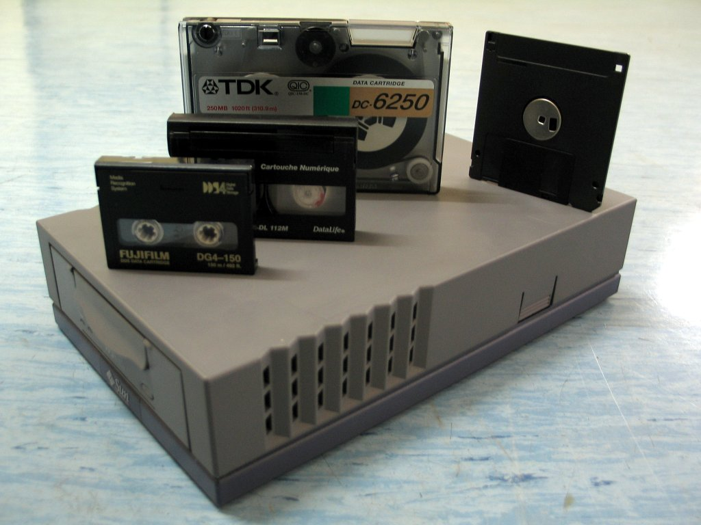
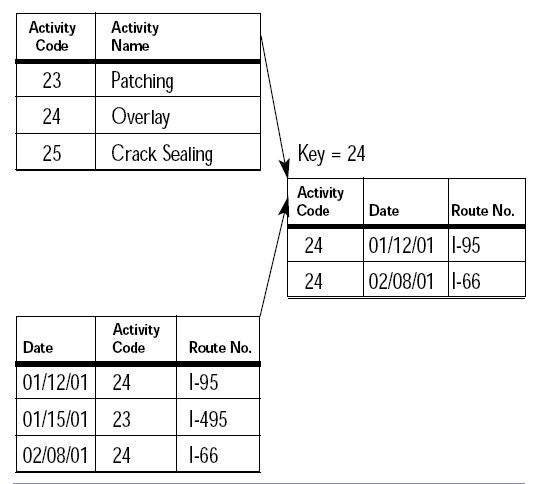

Introduction to Data Management
In the earliest days of computing, storing and retrieving information was an arduous, mechanical process. Long before structured query languages and sophisticated database engines existed, early software applications relied entirely on flat files stored sequentially on magnetic tapes or basic punch cards. This meant that every single application had to implement its own logic to read, parse, search, and write records directly to the file system.
As computer applications grew more complex and organizational needs expanded, the glaring limitations of flat-file systems became apparent. Data redundancy was everywhere, leading to severe synchronization inconsistencies. If an employee changed their address, multiple disparate files had to be manually located and updated. If any hardware interruption occurred in the middle of a write operation, entire files risked total corruption with virtually no recovery mechanism.

The Early Models: Hierarchical and Network
To resolve the inefficiencies inherent in unstructured text files, researchers during the late 1960s conceived tree-like and graph-based data arrangements. These were formalized primarily into two architectures:
- Hierarchical Model: Structures records in an inverted tree where each child record possesses exactly one parent entity.
- Network Model: Expands the tree model into an arbitrary directed graph, permitting many-to-many relationships across records.
While these systems brought significant performance enhancements for structured queries, they introduced rigid access pathways. Developers were forced to navigate records sequentially through hardcoded physical pointers. If the underlying data schema had to change, developers frequently had to rewrite entire chunks of application software from scratch.
The Relational Revolution
A monumental breakthrough occurred in 1970 when British computer scientist Edgar F. Codd authored his famous research paper outlining the relational model. Codd proposed abstracting data away from physical hardware constraints, representing information mathematically as relations (tables composed of rows and columns).
Under the relational paradigm, data integrity is guarded rigorously by structural constraints such as primary keys, foreign keys, and unique indexes. Application programmers no longer needed to worry about exact disk addresses; instead, a declarative query engine evaluated the requested information and constructed an optimal execution strategy under the hood. You can read more about Edgar Codd's foundational work on the Wikipedia Biography of Edgar F. Codd.

The sequential steps that transform an abstract business rule into a normalized relational model generally follow this pipeline:
- Entity identification and attribute mapping.
- Definition of primary and foreign key relationships.
- Normalization passes to eliminate anomalies and redundancy.
- Creation of indexes to accelerate critical query lookup times.
Architecture Comparison
The table below illustrates the primary trade-offs across the historical architectures discussed:
| Storage Paradigm | Primary Benefit | Main Limitation | Primary Use Era |
|---|---|---|---|
| Flat Files | Very simple to create | High redundancy and zero data integrity | 1950s - 1960s |
| Hierarchical | Fast one-to-many lookups | Strict tree structure; no multiple parents | Late 1960s |
| Network | Supports many-to-many links | Excessive pointer maintenance overhead | 1970s |
| Relational (RDBMS) | Declarative SQL, schema flexibility, ACID | Requires complex engine tuning at scale | 1980s - Present |
Conclusion
The continuous evolution of data storage systems demonstrates computer science's persistent drive toward abstraction and reliability. By transitioning from fragile physical flat files to mathematical relational models, software engineers gained powerful mechanisms to ensure transactional integrity and consistency. While newer NoSQL and distributed database systems continue to evolve for modern big-data workloads, the foundational principles established by the relational model remain the bedrock of modern data infrastructure worldwide.